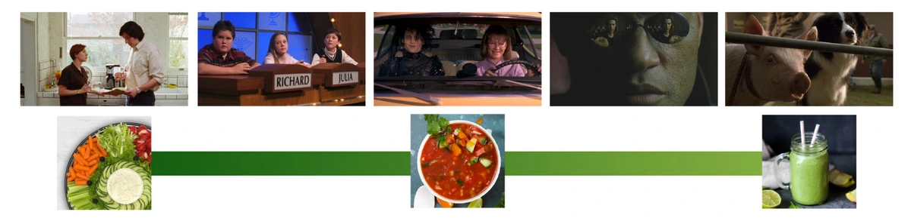
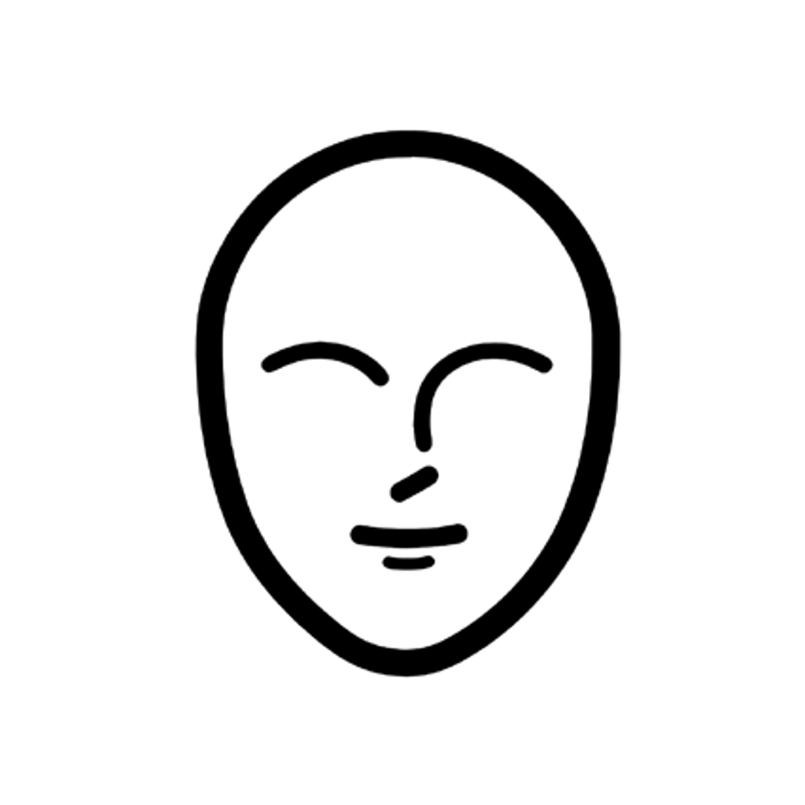

Your voice will help you create films that engage audiences, stand the test of time, and have a real impact on the world around you. From a career perspective, it makes you memorable, hireable, and irreplaceable.
You don’t build your director’s voice, you identify it.
“Every block of stone has a statue inside it and it is the task of the sculptor to discover it. I saw the angel in the marble and carved until I set him free.” — Michaelangelo
in the same way, this is how you must approach uncovering your director’s voice.
Subconscious: anything that motivates you without your awareness.
directing is an intuitive skill, so your subconscious plays a big role in your process.
02 · 风格怎样贯穿作品02 · Style across a body of work
即使合作的艺术家不同，鲜明的导演风格仍会贯穿整组作品。A distinctive directing style will shine through an entire body of work, even when working with different artists.
《断头谷》(1999) · 美术设计 Rick HeinrichsSleepy Hollow (1999) · Production design: Rick Heinrichs《理发师陶德》(2007) · 美术设计 Dante FerrettiSweeney Todd: The Demon Barber of Fleet Street (2007) · Production design: Dante Ferretti《黑影》(2012) · 美术设计 Gavin BocquetDark Shadows (2012) · Production design: Gavin Bocquet
蒂姆·伯顿即使换了美术设计，场面调度仍有清楚的风格。
Tim Burton’s mise-en-scène has a distinct style, even with different production designers:
《细细的红线》(1998) · 摄影 John TollThe Thin Red Line (1998) · Cinematography: John Toll《歌声不绝》(2017) · 摄影 Emmanuel LubezkiSong to Song (2017) · Cinematography: Emmanuel Lubezki《隐秘的生活》(2019) · 摄影 Jörg WidmerA Hidden Life (2019) · Cinematography: Jörg Widmer
泰伦斯·马力克即使换了摄影指导，观看影像的方式依然一致。
Terrence Malick’s eye for cinematography remains consistent with different DPs:
Quentin Tarantino is famous for his chapter title cards:
《瓶装火箭》(1996)Bottle Rocket (1996)《天才一族》(2001)The Royal Tenenbaums (2001)《穿越大吉岭》(2007)The Darjeeling Limited (2007)
韦斯·安德森喜欢细节丰富、从正上方拍的插入镜头。
Wes Anderson loves his detailed, overhead insert shots:
《迷失东京》(2003)Lost in Translation (2003)《绝代艳后》(2006)Marie Antoinette (2006)《在某处》(2010)Somewhere (2010)
索菲亚·科波拉常拍人物躺在床上沉思。
Sofia Coppola shows her characters contemplating in bed:
04 · 察觉潜意识的模式04 · Perception
你能选择看向哪里，却不能完全选择自己会看见什么。你看见的，就是你的感知。导演声音不只来自有意识的决定；没有察觉的模式，也可能同样强大。You can choose what you look at, you can’t choose what you see. What you see is your perception. Your director’s voice is not constructed only by conscious decisions. Patterns you’re not aware of can be just as powerful as the ones you are.
“My songs are personal and intimate; a lot of them chronicle my inner life... ...I fictionalize to protect myself and my targets (though I’ve still had to organize several apology dinners with ex-lovers in order to ask forgiveness). I tend to only let things mix and blur very slightly, which is to say I keep my blender on a low setting. On a scale of 1 to 10, it’s at a level 3. If you look, you can still recognize the component parts: in the final art gazpacho, the finger might be severed and mangled, but you can still peer into the bowl and see it floating there. Neil [Gaiman] writes fiction about very non-real things: a book about a boy raised by ghosts in a graveyard; an America in which old gods and new battle over humanity’s fate; graphic novels in which a star that falls from the sky turns out to be a girl with a broken leg. Neil sets his Art Blender at eleven. The reader usually has no idea where the experiences of his life have settled in the superfine pureé of the final product. ...All art, no matter what shape it is, has to come from somewhere. We can only collect the dots that we can collect.”
— Amanda Palmer, The Art of Asking

从生食拼盘，到冷汤，再到果昔Crudité → gazpacho → smoothie
你怎样呈现自己的经历？
How do you present your experiences?
生食拼盘Crudité
原生raw
半自传式semi-autobiographical
未经筛选unfiltered
能认出原貌recognizable
容易共鸣relatable
西班牙冷汤Gazpacho
真实real
戏剧化dramatic
暗示性suggestive
熟悉familiar
真诚authentic
果昔Smoothie
异域感exotic
幻想fantasy
精炼refined
残留痕迹vestige
抽象abstract
06 · 找到你的影响支柱06 · Identifying influences
培养潜意识，探索你的风格。先列出最影响你的六部电影。Cultivating your subconscious and exploring your style. Identifying influences: create a list of your top 6 films.
07 · 探索你的创作过程07 · Exploring your process
从下面的词库中，选出最吸引你、最能让你投入的三个电影创作方面。Select the three facets of filmmaking that interest and engage you most from the word bank below.
制片producing
写作writing
艺术指导art direction
故事发生的环境setting
美术设计production design
场景陈设set decor
道具props
造型与服装style, costumes
角色设计character design
选角casting
表演acting
发型与化妆hair and makeup
摄影cinematography
摄影机与运动camera and movement
光线与色彩lighting and color
节奏pacing
剪辑editing
声音与音乐sound and music
特技stunts
视觉特效vfx
情节plot
节奏pacing
情绪emotion
视角perspective
人物character
关系relationships
连续性continuity
图形graphics
08 · 导演自我评估08 · Director’s self assessment
诚实地回答这些问题，让答案推动你做导演时的选择。人生阶段和处境改变时，你会在自我评估里看见不同的信息；定期重做，去理解自己的不同侧面。Review the following questions and answer honestly. Use your answers to motivate the decision making used in your directorial process. Different moments in your life and circumstance will reveal different pieces of information in your self-assessment. Use this document on a regular basis to better understand different aspects of yourself.
09 · 映照者与对立者09 · Reflections & adversaries
从故事里的「映照者」与「对立者」来看自己的生活。映照者体现了与你一致的品质，让你认出自己的价值观；对立者体现了直接相反的品质，也让你认出自己坚持什么。View your life through the storytelling device of reflections and adversaries. Reflections are people who show you your values by exhibiting qualities aligned with them. Adversaries are people who show you your values by exhibiting qualities that directly oppose them.

你自己Yourself
10 · 检查自己的优势与盲点10 · Check your privilege
勾选符合你情况的陈述，辨认自己在哪些方面拥有优势。打勾的地方可能是盲点所在；没有打勾的地方，可能是你独特视角的来源。Tick the following checklist to identify areas of privilege in your life. The statements with checkmarks point to where you may have a blindspot. The statements without checkmarks point to where you might have a unique perspective.
11 · 凝视：三种真实11 · The gaze: three kinds of truth
凝视是一种带着力量的观看或观察，是有模式、持续的注意。导演的凝视，就是你的视角，加上摄影机的力量。The Gaze is a state of empowered looking or observing. A patterned or sustained attention. The Director’s Gaze is your perspective + the power of the camera.
ObjectivityObjectivity
客观性
不依赖个人解释的真相；可成立、可预测、可重复的现实。
《木兰花》是一部电影。
《木兰花》的背景在洛杉矶。
汤姆·克鲁斯出演了《木兰花》。
Objectivity
Truth independent of individual interpretation. Hard truth. Viable, predictable, reproducible reality.
1. Magnolia is a movie. 2. Magnolia is set in LA. 3. Tom Cruise is in Magnolia.
IntersubjectivityIntersubjectivity
主体间性
真实与想法相互交会；一种共同拥有的定义、解释或经验，是社会协商后的真实理解。
《木兰花》是一部好电影。
《木兰花》讲的是在洛杉矶生活。
汤姆·克鲁斯在《木兰花》里演得好。
Intersubjectivity
The relationship or intersection of truth and thought. Soft truth. A definition, interpretation, or experience shared. A socially agreed upon understanding of truth.
1. Magnolia is a good movie. 2. Magnolia is about living LA. 3. Tom Cruise gives a good performance in Magnolia.
SubjectivitySubjectivity
主观性
基于经验、没有可证明真值的想法或观点；在共同语境里，对现实的不同解释。
《木兰花》是一部关于「___」的电影！
《木兰花》把洛杉矶生活拍得毫无快乐。
Frank T.J. Mackey 是汤姆·克鲁斯最好的表演。
Subjectivity
Thoughts or ideas based on experience with no provable truth. Opinion. Any variance of reality with a shared context. Interpretation of truth.
1. Magnolia is a movie about [fill in the blank]! 2. Magnolia is a joyless depiction of living in LA. 3. Frank T.J. Mackey is Tom Cruise’s best performance.
12 · 男性凝视与女性式凝视12 · The male gaze & feminine gaze
男性凝视
男性凝视是一种艺术史论述：指出媒体——尤其为性愉悦服务的影像——反复把女性客体化的惯例。讲义将概念的早期界定联系到艺术评论家 John Berger，将术语联系到电影学者 Laura Mulvey；后续研究也把它扩展为艺术与媒体里的整体叙事。
它把自我放在主体位置，由自我定义别人的用途，把别人当作客体；动力是征服与达成。
The male gaze
The Male Gaze is an art history thesis noting a conventional pattern of objectifying depictions of women in media (particularly for sexual pleasure). The concept was first defined by art critic John Berger, and the term was coined by film scholar Laura Mulvey. The philosophy has been further studied and defined to include an overall narrative common in art & media.
Self as subject, the definer of usefulness and others as object. Motivated by a mission to conquer/ achieve.
男性凝视：行动与命运Male gaze: inspiring aspects
有启发的方面
让人有行动能力；鼓励勇气、策略与主动参与自己的命运，探索不朽。
Inspiring aspects
Empowering. Advocates for courage, strategy, and active participation in one’s own destiny. Explores immortality.
Singular perspective. Indulgently objectifying voyeurs. Often considers women only in regard to their usefulness, which is often sexual. Relishes in power. Little regard for human feeling or experience, oblivious to empathy and consequence. Can project a false sense or justice, justify any course of action, demonize or destroy those who frustrate, mystify or disagree. Lack of connection to humanity becomes an obsession with immortality.
The Feminine Gaze is not an equal-and-opposite reversal of the gender essentialism of The Male Gaze, but a responsive thesis examining the undefined narrative territory and how the feminine narrative differs in its worldview. The Feminine Gaze rejects the idea of men as doers and women as passive participants. note: It differs from other Gazes in not holding a controlling narrative or worldview.
Motivation to explore or experience. Sees self as the nurturer, transformative.
女性式凝视：共情与体验Feminine gaze: inspiring aspects
有启发的方面
重视共情，鼓励更深地理解人的处境，让观众与人物一起感受当下，探索生命的有限。
Inspiring aspects
Empathetic. Advocates for a deeper understanding of the human condition, offering an opportunity to feel the moment with the character. Explores mortality.
Gridlocked perspective. Indugently emotional voyeurs. Can be passive or lingering. Relishes in personal experience or emotion. Can project a false or toxic sense of understanding or self-righteousness. Can be manipulative in its mission of transformation. Deep connection to humanity can become an obsession with mortality.
13 · 还有哪些凝视在影响你13 · More on the gaze
凝视不只涉及性别。任何占据统治地位或社会优势的群体，都可能控制「什么是好、什么是正常」的叙事。下面列出的是这些凝视所作的假设，用来检查盲点，而不是对各群体的事实判断。The Gaze expands beyond the engendered worldview to any ruling or socially privileged demographic with a controlling narrative of what is “good” and “normal.” Here are a few more Gazes to be aware of:
白人凝视The White Gaze
白人凝视
这种凝视默认：
把白人当作「正常人」：理智、聪明、有创新力、有见识，完整理解真实世界。
认为非白人都想变成白人。
把他者异国情调化、激情化，或当成更自由的对象。
The White Gaze
assumes: 1. Normal people are white. White people are sensible, intelligent, innovative, aware, have a wholly complex understanding of how the real world works. 2. Anyone who is not wishes to be. 3. Others may be fetishized as exotic, empassioned or liberated.
assumes: 1. Normal people are American. They speak English with neutralized accents, dress vibrantly and casually, and submit to gender roles. They are sensible, intelligent, energetic, innovative, have a solid grasp of common sense and know what is important. 2. Anyone who is not American wishes to be. 3. Others may be fetishized as exotic, empassioned or liberated.
异性恋凝视The Heterosexual Gaze
异性恋凝视
这种凝视默认：
把异性恋当作「正常」：每个人都主动想要一段明确、一对一的男女关系。
把酷儿或单身者当成不快乐、有缺陷，或暗自渴望关系的人。
把他者异国情调化，或想象成自由、神秘而智慧的对象。
The Heterosexual Gaze
assumes: 1. Normal people are heterosexual. Everyone has an active desire to be in a clearly-defined, monogamous, man-woman relationship. 2. Anyone who is queer or single is unhappy, defective or secretly pining. 3. Others may be fetishized as exotic, liberated or mystically wise.
assumes: 1. Normal people are abled; defined as happy, healthy, calm, focused, organized, eloquent, and otherwise socially conformable, with full sensory perception, ambulatory, and otherwise able-bodied. 2. Anyone who is not wishes to be, because an abled experience is a better, richer or more complete life experience. Anyone who is not is untrustworthy, unhappy or defective; to be pitied, coddled or avoided. 3. Others may be fetishized as exotic, worldly or mystically wise.
assumes: 1. Normal people are legal, social adults. Children and teenagers are not yet normal, and senior or elderly adults have expired their normalness. Adults who are childlike or have not hit certain rites of passage (e.g., virginity, etc) are abnormal. 2. May also be fetishedized as liberated or mystically wise.
assumes: 1. Normal people are people who have seen and experienced the great transition of the late 20th Century. 2. Those born later are abnormal, uneducated, foolish, alien. Digitization is abnormal and alien. 4th Wave progressivism is bizarre, foolish or “going too far.”
assumes: 1. Normal people live in metropolitan cities or in suburbs nearby. They enjoy the useful benefits of metropolitan life, but never personally identifies with urbanity (stylish but not too stylish, effortlessly good looking, enlightened but down to earth). 2. Anyone who is not wishes to be. Those who are not are urban extremists, suburban dullards or country yokels. 3. May fetishize countryfolk as uncomplicated or enlightened.
assumes: 1. Normal people are upper-middle class. 2. Anyone who struggles economically is undereducated, unintelligent, lazy or foolish. Anyone who is “too” wealthy is silly, aloof or immoral. Everyone hopes to be comfortably affluent. 3. May also fetishize poverty as “the simple life” or “the real world.”
精英凝视The Elite Gaze
精英凝视
这种凝视默认：
把大学毕业生当作「正常人」。
认为其他人都想上过大学；把没上大学的人当作不那么聪明、悲伤、不幸，或需要怜悯的人。
The Elite Gaze
assumes: 1. Normal people are college graduates. 2. Anyone who is not hopes to be. Anyone who is not is less intelligent, sad, unlucky or to be pitied.
白领凝视The White Collar Gaze
白领凝视
这种凝视默认：
把办公室工作者当作「正常人」。
认为其他人都想如此；把非办公室工作者当作不那么聪明，或需要怜悯的人。
也可能把他们浪漫化成简单、开悟、与人性相连的人。
The White Collar Gaze
assumes: 1. Normal people are office workers. 2. Anyone who is not hopes to be. Anyone who is not is less intelligent or to be pitied. 3. May also be fetishized as uncomplicated, enlighted, connected to humanity.
14 · 电影的力量与责任14 · Cinema’s power & responsibility
凝视也带来责任。电影怎样改变角色榜样、社会认知、恐惧、消费和制度？The gaze and the power of responsibility. The power and influence of cinema.
斯嘉丽效应：角色榜样The Scully Effect — role models
斯嘉丽效应：角色榜样
讲义列出的斯嘉丽效应调查：在 1979–1993 年出生、目前从事 STEM 工作的女性中，63% 表示 Dana Scully 启发了她们进入这个领域。
The Scully Effect — role models
The Scully Effect: 63% of women (born 1979-1993) currently working in STEM say Dana Scully inspired their choice to pursue that line of work.
In 2012, the number of girls participating in national archery competitions went up 200%. The Hunger Games was released March 23, 2012, and Brave was released June 22, 2012.
Black Panther (2018) — changing paradigms, overcoming fear
Animal shelters have always struggled with a surplus of black cats, because people associate them with bad luck. After the release of Black Panther, shelters were getting requests for black cats, and they no longer have a problem finding homes.
《费城故事》(1993)：改变观念、克服恐惧Philadelphia (1993) — changing paradigms, overcoming fear
《费城故事》(1993)：改变观念、克服恐惧
Jonathan Demme 想改变社会对艾滋病的理解。他说：「我们聚在一起，想拍一部能推动寻找治疗方法、拯救生命的电影。我们不想只打动像我们一样、原本就关心艾滋病患者的人；我们想接触那些根本不在乎患者的人。那才是目标观众。」
Philadelphia (1993) — changing paradigms, overcoming fear
Jonathan Demme was intent on making a movie that could change the social paradigm about the AIDS epidemic. “We got together and tried to come up with a movie that would help push for a cure and save lives. We didn’t want to make a film that would appeal to an audience of people like us, who already had a predisposition for caring about people with AIDS, We wanted to reach the people who couldn’t care less about people with AIDS. That was our target audience.”
《杯酒人生》(2004)：有人得益，也有人失利Sideways (2004) — good for some, bad for others
《杯酒人生》(2004)：有人得益，也有人失利
讲义指出，《杯酒人生》上映后，黑皮诺葡萄酒销售增长了 16%，梅洛销售下滑。
Sideways (2004) — good for some, bad for others
After the release of Sideways, pinot noir sales went up 16% and merlot sales dipped.
《朱门恩怨》(1978–1991)：隐性推动反思与改变Dallas (1978–1991) — implicit cause for reflection that leads to change
Dallas (1978–1991) — implicit cause for reflection that leads to change
Because the TV show Dallas centered around corrupt oil barren J.R. Ewing, the censors of the communist government of Romania wrongly assumed the show was anti-capitalist, and the show was allowed to broadcast in Romania in 1979. When the regime noticed that the show was bringing attention to the extreme wealth gap, it was taken off the air in 1981. But the damage was already done, and the Romanian people’s frustration and distrust with their communist dictatorship lead to an uprising, dethroning Nicolae Ceausescu in 1989. Dallas star Larry Hagman said “People from Bucharest came up to me in the street with tears in their eyes saying, ‘J.R. saved our country.’”
《伯尼》(2011)：明确邀请反思与改变Bernie (2011) — explicit call for reflection that leads to change
《伯尼》(2011)：明确邀请反思与改变
Richard Linklater 的《伯尼》讲述被判谋杀罪的 Bernie Tiede 的真实故事。讲义认为，电影为其行为提供了足够有说服力的可辩护解释，促使案件重新审查；Tiede 在 2014 年获准保释，量刑也被重新考虑。
Bernie (2011) — explicit call for reflection that leads to change
Richard Linklater’s film Bernie – the true-life story of Bernie Tiede, a convicted murderer – formed a convincing enough argument that his actions were defensible that Tiede’s case was re-examined, leading to him being released on bail in 2014 and his sentence reconsidered.